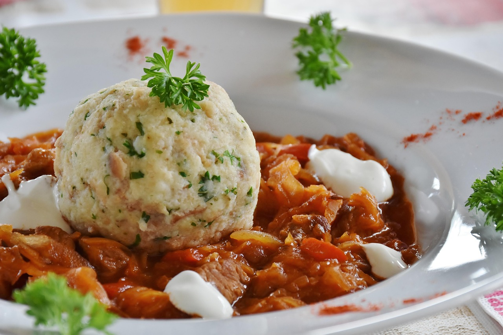

Szegediner Gulasch
auch als Gulasch Szegediner Art, ungarischer Krautgulasch oder Gulasch mit Sauerkraut bekannt

10min
normal
06.03.2026
Zutaten für wieviel
| 500 | g | Schweinegulasch |
| 500 | g | Sauerkraut |
| 1 - 2 | Stk. | Zwiebel(n) |
| 1 - 2 | Stk. | Knoblauchzehe(n) |
| 100 | g | Tomatenmark |
| 100 | ml | Weißwein |
| 500 | ml | Brühe (Gemüse, o.ä.) |
| 50 | ml | Öl |
| 50 | g | Butter |
| 50 | g | Mehl |
Gewürze
- Salz
- Pfeffer
- Paprika (edelsüß und geräuchert)
- Lorbeer
Optional, wenn man mag
- Kümmel
- Majoran
- Thymian
- Sauerrahm als topping
- Etwas gehackte Petersilie
Zubereitung
ca. 1h.
Gesamtzeit ca. 1h 30min
- Den Gulasch in Mundgerechte Stücke schneiden und im heißen Öl scharf anbraten. Zwiebeln grob würfeln und
Knoblauch grob hacken und zum Fleisch geben.
Alles gut würzen mit Salz, Pfeffer, reichlich geräucherten und edelsüßen Paprika und 1 - 2 Lorbeerblättern.
Hier optional noch mit Kümmel, Majoran oder Thymian abrunden. - Tomatenmark, Butter und Mehl dazugeben und kurz mit rösten.
Mit einem guten Schluck Weißwein ablöschen und Bratansatz vom Topfboden lösen, anschließend mit Brühe auffüllen.
Alternativ kann Weißwein und Brühe auch durch Wasser ersetzt werden. - Ca. 30 Minuten bei niedriger Hitze köcheln lassen. Anschließend das Sauerkraut dazugeben und für ca. weitere
30 Minuten köcheln lassen.
Vor dem Servieren nochmal abschmecken.
Anrichten und mit einem Esslöffel Sauerrahm und frisch gehackter Petersilie vollenden.
Tipps
- Schmeckt am besten zu Böhmischen Knödeln, Semmelknödeln oder einfach frischem Brot vom Bäcker.
- Das Sauerkraut kann kurz im Sieb abgetropft und mit etwas Wasser gewaschen werden für einen milderen Geschmack.
- Den Sauerrahm noch mit etwas Salz, Knoblauch und Zitronenabrieb verfeinern.
- Wer es etwas schärfer mag kann den Gulasch oder das Sauerrahmtopping mit etwas Cayennepfeffer abschmecken.
- Einmal leicht anbrennen lassen und einen Tag vorher zubereiten verbessern den Geschmack.